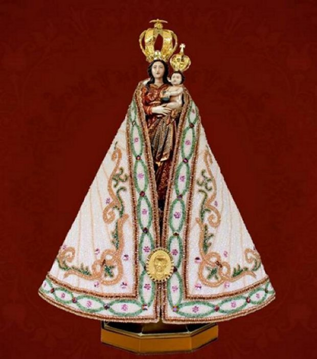

"MÃE DE JESUS"
"NOSSA ETERNA MÃE"


"NOSSA SENHORA sempre atende a nossa súplica, olhando por cada um de nós, amparando e inspirando as nossas buscas de soluções, ao longo dos caminhos E das incertezas do quotidiano, sedimentando a nossa fé NO DEUS DA VIDA".
=ÍNDICE=
 -
PRELÚDIO
-
PRELÚDIO
 -
-